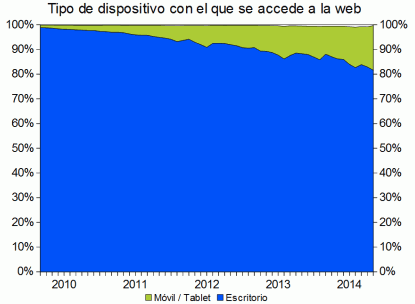

El acceso a la web
El cambio de una informática de escritorio a una informática móvil se está empezando a reflejar en las estadísticas de visitas a los sitios web. Según la empresa N ET M ARKET S HARE, uno de cada cinco accederían ya a la web desde un dispositivo móvil.
Hay que tener en cuenta que:
- NET MARKET SHARE recoge estadísticas de más de 40.000 sitios web.
- NET MARKET SHARE no cuenta páginas vistas, sino visitantes diarios únicos.
- NET MARKET SHARE pondera los visitantes de cada país de acuerdo con los datos de tráfico de Internet publicados por la CIA.